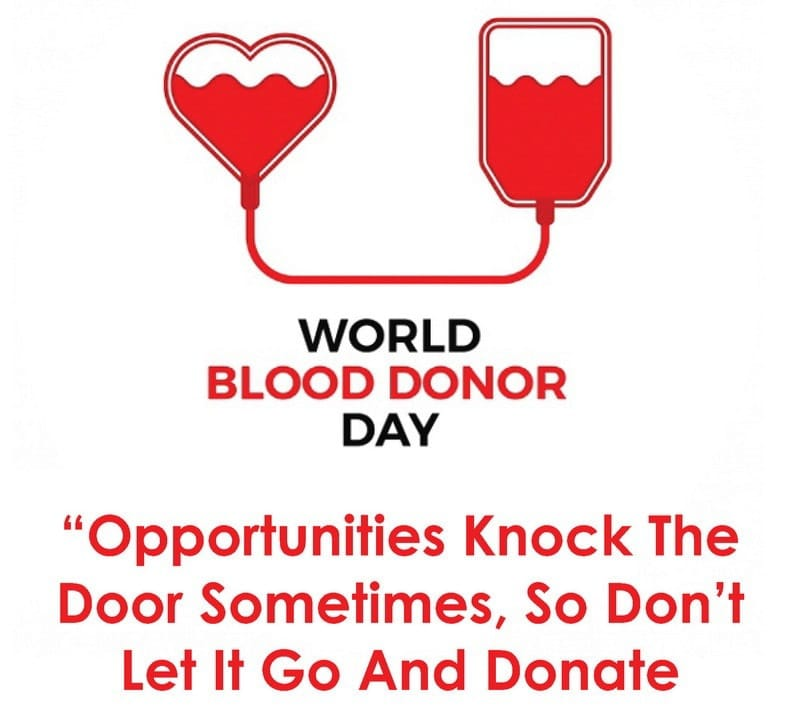
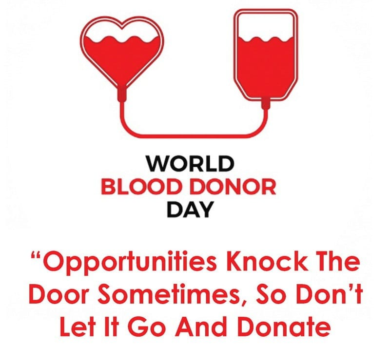

Most people can give blood.
The doubt that everybody has is, what can I get it from blood donation? Are there any benefits? Yes, there are many health benefits with blood donation. Now let us discuss a few benefits.
Iron plays an important role in our body, iron is an important component of hemoglobin. It helps to the red blood cells to carry oxygen from lungs to the whole body. If we don’t have enough iron in our body it will lead to some iron deficiency problems. So doctors prefer to take iron rich food. Intake of iron-rich food is not a problem, the problem is taking too much of iron-rich food. The body uses sufficient amount of iron. The remaining iron substance deposited in heart, liver, and pancreas. Because of this heart and liver problems are coming. So, donating blood iron levels are decreased and it helps to reduce heart and liver problems.
During a regular blood donation, we can give around 470 ml of whole blood. This occupies nearly 8 or 9 percent of the average blood volume of an adult person. Soon after the regeneration of blood process will starts. Within 24 to 48 hours lost volume will regenerate. It depends upon fluid intake. And within 8 or 9 weeks lost cells are regenerated by stem cells. This process takes place in bone marrow. With the newly generated blood cells, a person energy levels and activity goes up, your body stays healthy and work more efficiently.
By donating blood once we can burn nearly 600 calories. This weight reduction comes without any exercise or anything. It is different from daily exercises because of blood donation is not a regular activity. It is better to donate blood once per quarter year. We know that these days many are prone to heart attack due to heavyweight. Even though we can burn less amount of calories through blood donation it is better than nothing.
By giving our blood to others who are in need, can save a life. “You saved not only one person life but also a life of many who depends on that person”. The Person who got life from others definitely look forward to his/her turn. This attitude in people grows like a chain reaction. And everybody on the globe is now connected in this chaining process.
As of now, we discussed the benefits of blood donation. After achieving health benefits definitely, your lifespan will increase. “We know that there are many blood banks running in urban areas on a regular basis, but on this special day, many organizations and volunteers come forward to organize camps in rural areas also. So, if you observe any such camps near your residence, you can donate and make this day happy to you and others”.
 
